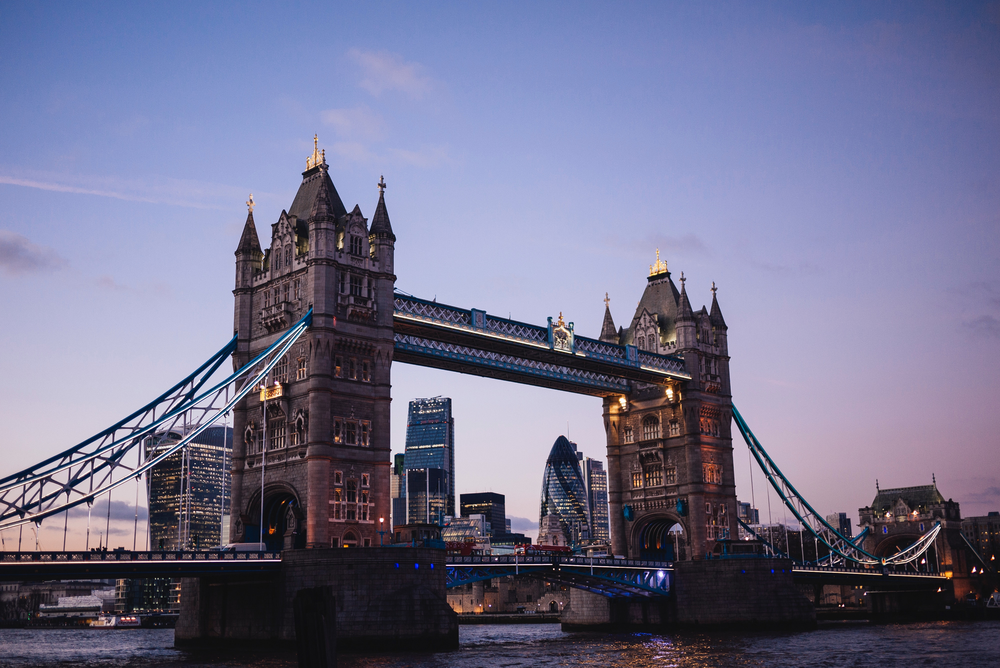

A dynamic seven-story digital installation at Bangkok‘s tallest tower activates its neighborhood and integrates the building into the surrounding cityscape.
MahaNakhon is a high-rise mixed-use complex located in the heart of B angkok’s thriving Central Business District. Designed by architects Ole Scheeren and Eric Chang of BuroOS and developed by Pace Development, the 77-story building is the tallest tower in the city and has a distinctive pixelated profile that appears to dissolve in the skyline. Pentagram designed a program of environmental graphics for MahaNakhon, including a dynamic digital façade for CUBE, its retail component, that enhances the architecture and integrates the building into the dizzying cityscape.